♥らびこ♥の記録RABIKO's Journal
NFTアート展in伊勢 プロジェクター投影
NFTアート展in伊勢 プロジェクター投影に参加。
未来芸術展2024
北千住で開催された未来芸術展2024 モニター上映に参加。
NFT COLLECTION IN 仙台（全国モニター展示）
SUPPORTED BY ＹＯＲＩ（（株）ＰＡＳＳＩＶＥＯＮＥ）。全国6ヶ所（仙台・広島・福岡・沖縄・名古屋・北海道）すべての会場を通して AR展示のNFT作品40に選んでいただき、全国モニター展示をしていただきました。
NFT COLLECTION IN 仙台（仙台モニター展示）
SUPPORTED BY ＹＯＲＩ（（株）ＰＡＳＳＩＶＥＯＮＥ）。仙台でのモニター展示をしていただきました。
銀座NFT画廊展
6月に選出していただいた銀座NFT画廊展の紹介ページが掲載され、展示期間が決まりました！選出クリエイター40名の中に入れて頂き本当に嬉しく思います❣「第4回公募作品紹介第2弾 – 自然や都市をモチーフにした、美しい10点のNFT作品」というテーマに入れて頂き、並行して池袋の屋外ビジョンにて展示していただけるそうです。とても光栄です！！
未来芸術展2023
北千住で開催されたNFT未来芸術展2023に参加致しました。
NFTわかるかも展
♥らびこ♥が参加させていただいた鹿児島川内駅で開催された「NFTわかるかも展」について、開催者様・主催者様のご厚意で、♥らびこ♥のように残念ながら現地参加できなくても、まるで現地にいるように楽しめる情報をTwitterに掲載して頂きました。
Gallery
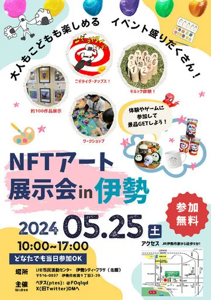
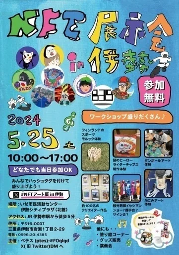
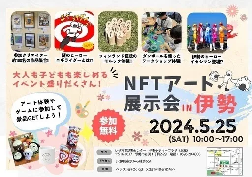
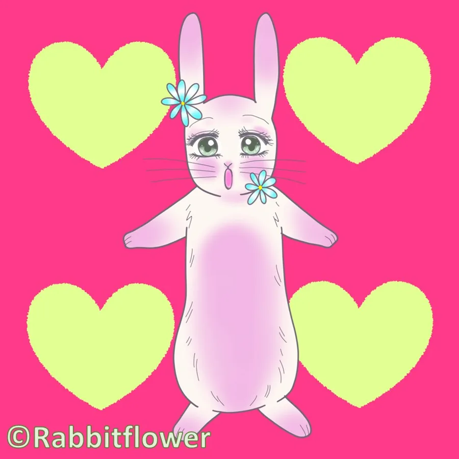
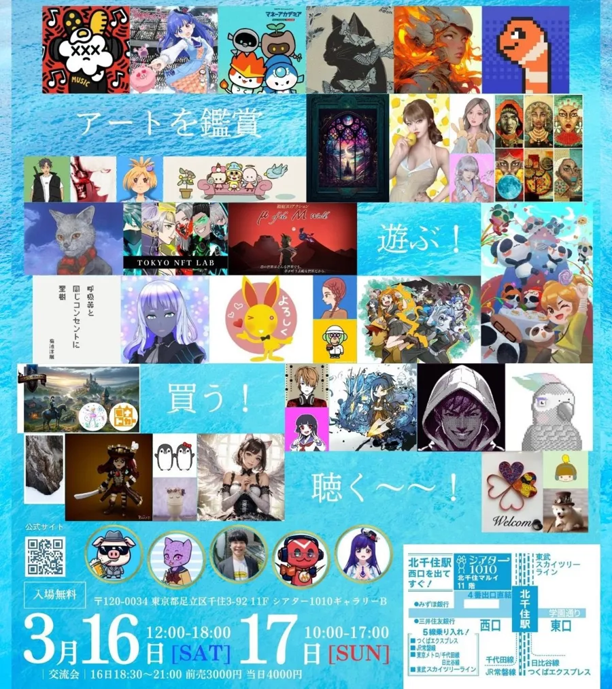
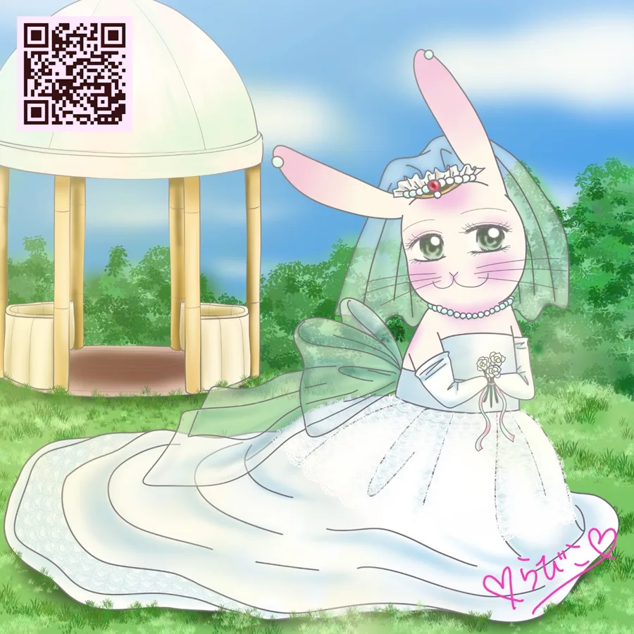
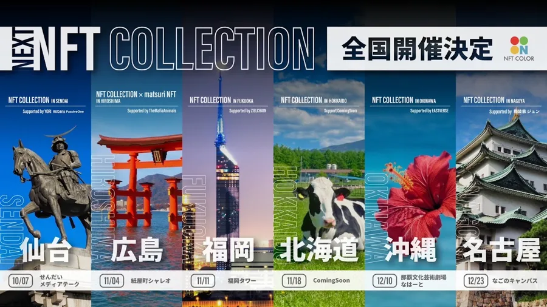
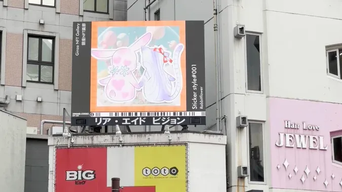
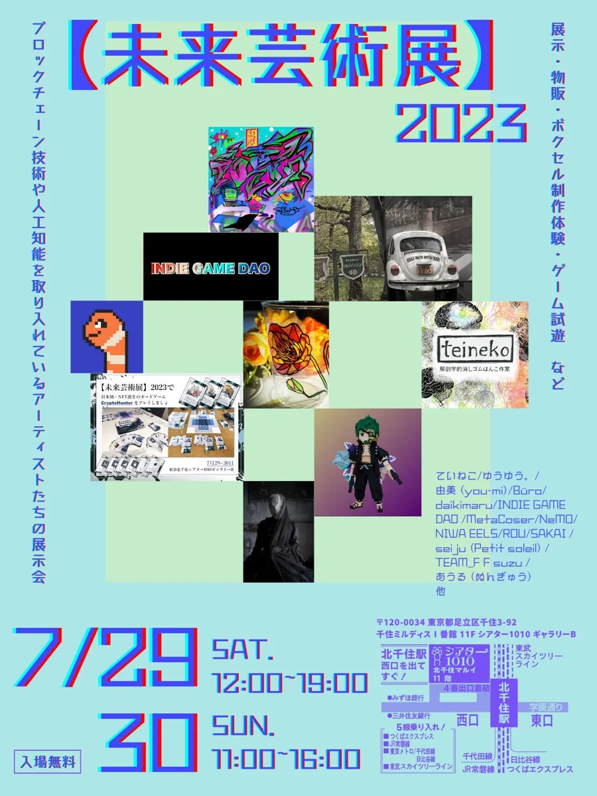
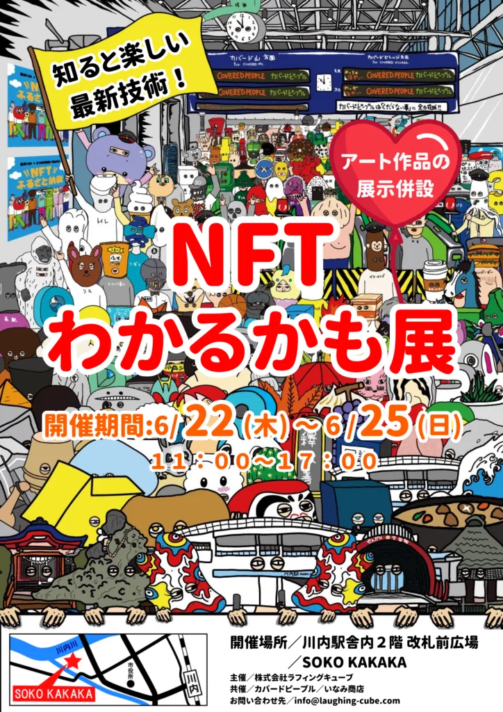
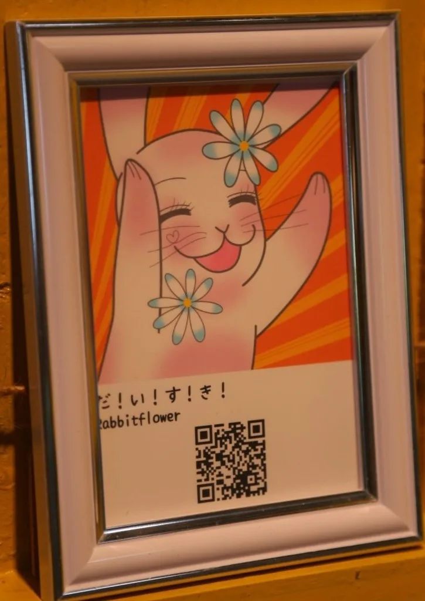
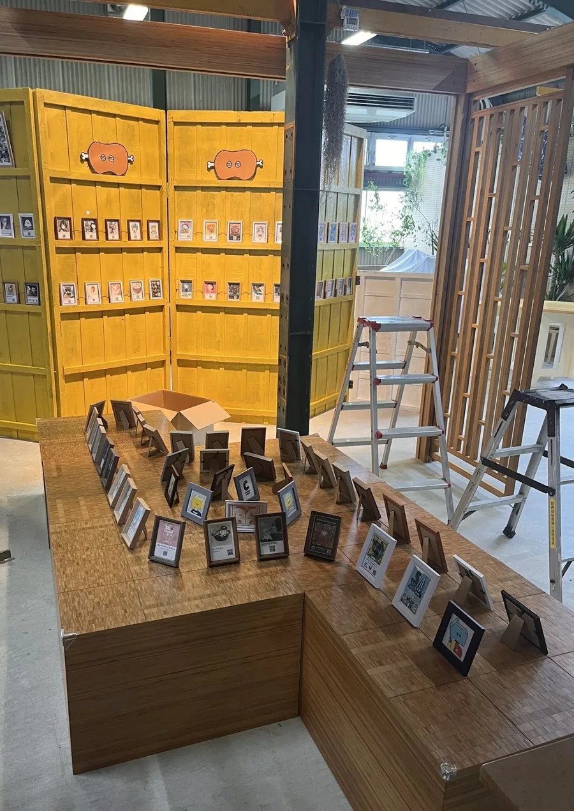